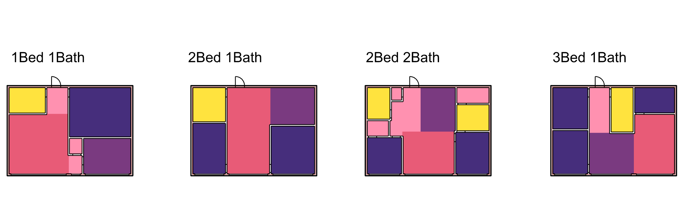

Spatial
This is the software for our research on A hypergraph model shows the carbon reduction potential of effective space use in housing and Inverse design of architectural floorplans with gradient-based optimization of binary subdivision graphs.
The plugin is available on Rhino 8 with Windows.
Tutorial Videos
Spatial basics
Inverse design walkthrough
Installation
-
Find your Grasshopper components folder. In Rhino, open Grasshopper, then go to
File > Special Folders > Components Folder. This is normally:%APPDATA%\Grasshopper\Libraries(i.e.
C:\Users\<you>\AppData\Roaming\Grasshopper\Libraries). -
Unblock the files if needed. If the zip was downloaded from the web, Windows may flag the
.zipfiles as blocked. Right-click on the.zipfolder → Properties → check "Unblock" → OK. -
Unzip the plugin there. Extract
SpatialGH_InverseDesign.zipdirectly into thatLibrariesfolder, so you end up with:Libraries\SpatialGH_InverseDesign\SpatialGH.gha Libraries\SpatialGH_InverseDesign\... (dependency DLLs) -
Restart Rhino/Grasshopper. The plugin's components should now appear on the Grasshopper ribbon.
-
Sign in and activate. Add the
Spatial Sign Incomponent and complete the browser sign-in with an activated Spatial account.
Example files
Spatial_basics.gh&Spatial_basics.3dm: walks through the plugin's basic functions, including loading an apartment, basic fitting functions, editing floorplans from our web UI, and fitting furniture. Watch this tutorial video to see how it works.InverseDesign_walkthrough.gh: walks through the plugin's functionality related to inverse design: the inverse design loop, inverse design with filtering, adding a room, and removing a room. Watch this tutorial video to see how it works.InverseDesign_examples.gh&InverseDesign_examples.3dm: shows the results produced for several different inputs on the same boundary.
